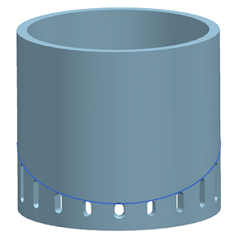

Activity: Edit instances of a pattern feature
Estimated time to complete: 7–10 minutes
In this activity, you will modify individual instances of a variational pattern by editing the parent reference object, changing the definition method of the pattern feature, and selectively suppressing and moving them.
|
 |
|

Open the Edit instances of a pattern feature activity.